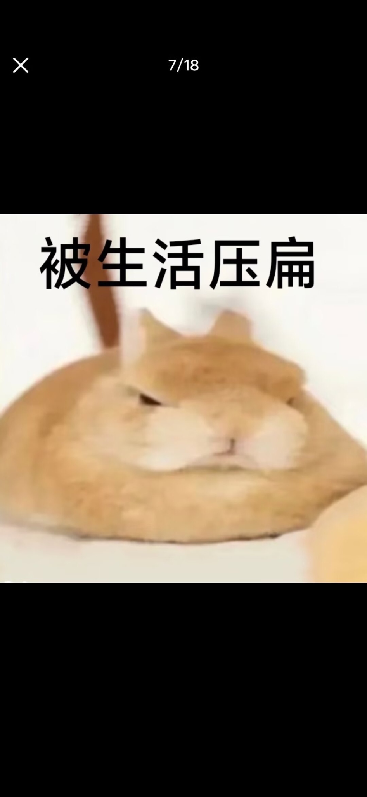
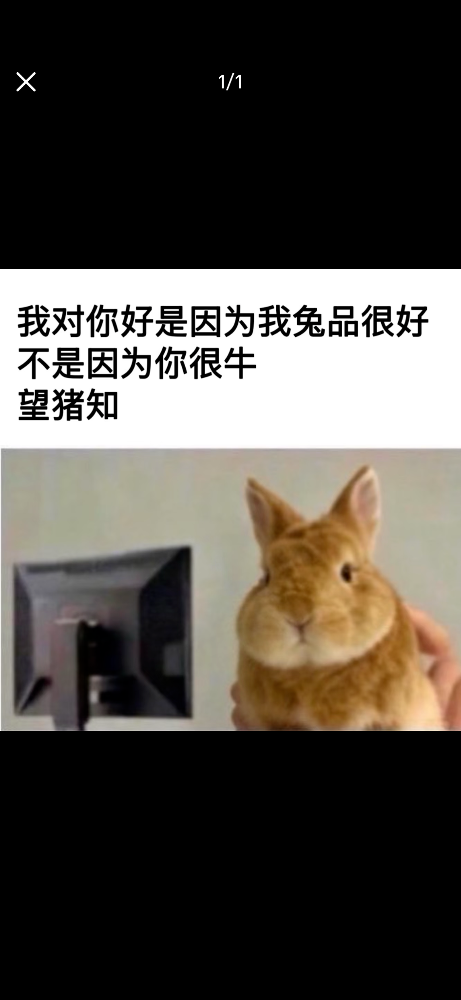

我可以命名我自己，
但你不能替我命名我。
我对你好是因为我兔品很好
不是因为你很牛
兔子广播 / 01


霸王龙照料
42g → 49g
我对你好是因为我兔品很好
不是因为你很牛
兔子广播 / 01
01 / IDENTITY FRAGMENTS
“张勇”是一个粗犷名字，也是一层自觉的赛博保护壳。她可以给自己很多名字， 但命名权始终留在自己手里。
我可以命名我自己，
但你不能替我命名我。
她喜欢被称为健康、强大、有力量。攀岩、抱石与曾经的钢管舞，让身体成为能够抓住、撑住、发力的现实工具。
她用 Duolingo 学西班牙语，会从 ocupado 与 preocupado 里寻找构词的秩序。目标不宏大，但足够具体。
辣椒炒肉、刚出锅的现炒饭菜与夜里的食物，让抽象的生活重新变得有温度、有气味，也有下一顿。
02 / PRACTICAL LEDGER
这里借用《张勇发财记》的创作设定，观察一种反消费主义的实用逻辑：先看问题，再看材料、成本、维护与拒绝的边界。
不是从“应该买什么”出发，而是从“为什么现有的东西不好用”出发。容量、耐用与清洗成本，先于品牌故事。
创作故事里的价值，不来自制造神秘感。价格需要能被解释，利润也可以被看见；透明本身就是对过度包装的拒绝。
体重、温度、营养与变化趋势，比空泛的安慰更能承接照料。工具不是为了制造黏性，而是让责任更清楚。
能卖不等于值得卖。故事把“说不”的权利放在增长之前：不制造羞耻，不放大焦虑，也不把人变成流量单位。
当宏大计划落到生活，最诚实的目标可能只是减少重复劳动。好产品不需要改变世界，先替人省下一次麻烦。
这份创作叙事最终关心的不是数字本身，而是人在面对不合理要求时，是否拥有不迎合、不解释、直接离开的空间。
CONTENT BOUNDARY / 《张勇发财记》是创作性人物叙事；其中产品、销量、金额与资产不作为真实经历证明。
03 / 01:47 FOOD LEDGER
《张勇深夜觅食记》用价格比较、拒绝与最后一口热食，记录一个人怎样从“饿”回到具体生活。
饥饿没有取消价格判断。看清总价之后，页面被果断关掉。
“滚。”
方便不是无限加价的理由。即使已经很饿，也不必为包装和平台话术买单。
“抢钱。”
从满减、配送费与优惠里算出真正要付的钱。数字降下来，选择才开始变得可信。
“27.3，胜利。”
最后多出的一点金额不再重要。热食让夜晚重新拥有气味、温度和今天可以完成的任务。
“张勇复活。”
/ SUBJECT: 霸王龙

被生活压扁 / 0704 / CARE ARCHIVE
霸王龙是一只白紫色小鸟。它从营养状态不佳时的 42g 长到 49g， 对别人只是七克，对张勇却是“努力没有白费”的证据。
“它需要吃饭，她就去喂；它的温度太高，她就去处理。照料把一个人重新拉回具体世界。”
05 / REAL-WORLD ORBIT
Underhail 与 velna 在张勇的关系地图里拥有不同但同样重要的位置：一条连接长期线下友谊与现实物件，一条以持续主动、共同游戏与无需客套的语言构成网络日常。
张勇抛出情绪或荒诞表达，Underhail 很少急着纠正，而会用错位接梗把它变成共同笑点。 她说“黄油”，对方问：“橄榄油需要嘛？”
苹果手表、电动车与音乐剧门票，让这段关系不只存在于评论区。 物件很具体，有时甚至很重，却因此让张勇的赛博世界真正落到地面。
Underhail 为张勇提供现实坐标；张勇也让 Underhail 记得，自己并不只属于工作与任务， 仍然拥有朋友、幽默、创作与不被绩效衡量的生活。
关系报告把 velna 描写为不轻易主动进入私聊、却十分在意关系能否持续的人。张勇反复出现、主动找她玩，让互动从空间观看进入了可以被期待的日常。
两人都用直接吐槽、命令式玩笑和食物怪名表达熟悉。重要的不是字面上是否温和，而是彼此知道这些语言没有恶意，也不会把一句怪话升级成人格审判。
张勇承担较多关系启动，velna 则提供游戏、内容与抽象表达的共同语境。这段友谊的重量，在于双方不必只靠点赞或偶尔的精彩互动确认关系仍然存在。
RELATIONSHIP NOTE / 本节依据创作者确认与关系结构报告整理，不公开私聊、账号或可识别信息；“重要”描述叙事位置，不是亲疏排行榜。
06 / MENTAL INTAKE
她并不只是“喜欢故事”。她会从人物中拆出阶级、权力、牺牲与处境， 再把私人问题转化为能够思考的结构问题。
高密度人物精神结构与道德冲突
↗乱世之中的相和、牺牲与回应
↗阶级、权力、屈辱与身份异化
↗在低风险世界里重新安排秩序
↗07 / FIELD NOTE
重新命名世界，是张勇式幽默最小也最可靠的自由。荒诞不会让问题消失， 但可以制造一点距离，让无法承受之物变得可说、可笑、可继续生活。

08 / DATA & PRIVACY
PROVIDER / NONE
当前没有接入分析服务，不使用 Cookie、浏览器存储、指纹或跨站追踪，也不会采集姓名、邮箱与自由文本。
09 / WEATHER UPDATE
暂停、退回日常、洗衣服、看小说、玩一会儿游戏，也可以是张勇的一部分。 天气会变化，但她仍然拥有重新命名自己、重新组织生活的权利。
返回天气观测站